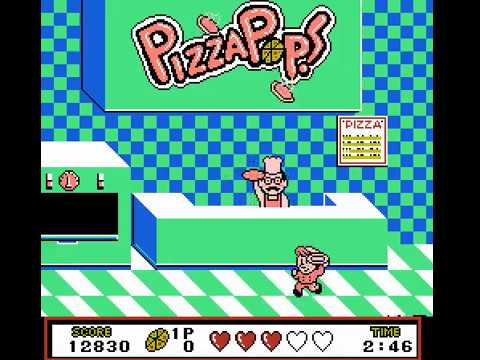

Review

So, there's a little hidden gem of the Japanese library called "Pizza Pop," that for reason or another, never made it to western shores. It's officially the first game I've mastered on RetroAchievements; it's a pretty easy set; all of the achievements but 2 are unlocked just by progressing through the game, and the two that can't be are easily obtained. Plus, it's a heavily re-playable and short game, so even if they were a bit tougher than they are, getting them wouldn't be a major issue.
Anyways, enough about the set. Let's talk about the game.
Pizza Pop is your average two-button side-scroller; press A to jump and B to attack. Play through the levels in order; sweet and simple. No map screen; no level select. Just go back to the pizzeria at the end of every level, grab your pie, and make your way through the next level to deliver it to whichever schmuck is willing to buy it. Your character carries the pizza in his hand the entire game; no boxes, no hot bags; nothing. It's a cartoony little element that is representative of the overall charm of the game.
The visuals are not stunning, but they certainly are eye-popping; and, while the soundtrack is not particularly catchy, the tunes are easy to listen to. My favorite song is the one that starts at 2:56 in this video. The little jingles and sound effects are fantastic, though; overall I'd say the sound design is this game is very solid for its time, but nothing legendary.
Each level is short enough to make starting over from the beginning of the game fun and rewarding every time, and have their own theme. Some involve racing, all of them involve platforming, and all but one has a mini-boss at the end. These bosses are pretty easy to beat once you figure out their weakness.
The game allows you to "continue" twice, resetting your points each time of course. A skilled player will not have any problems with this, and the game is simple enough that players of all ages can and will enjoy mastering it. I like the fact that this game doesn't employ the "three hits" trope; each boss takes a different number of hits to defeat. The fourth and fifth bosses (Dracula and Bulldog) are too easy, if you ask me; Dracula at least has a force field gimmick, but once you know what to do, the fight is a total cakewalk. Bulldog, however, has nothing interesting going for him. He spawns a bunch of little runts, but you can probably confidently whoop this guy with 1 heart left in you.
Technical Details
You start out with three hearts out of a max of five, and hearts reset every stage. Every 20,000 points is an extra life, and in a given run you will likely get one or two 1-ups this way. Each level has a time-limit of around 3:00 or under, making it a fast-paced but low-stakes game. Every two or three levels, the player unlocks a bonus stage, which involves stacking pizzas and tossing 'em into an oven. It's fun to see how man you can get, but not really an engaging mini-game.
Final Verdict
I give this game a 7.5/10.
It is a simple game with no tricks up its sleeves, but this is part of its appeal. The game can be enjoyed by both kids and adults, and its graphics are cute and nice to look at. I cannot give this game a score any higher than this, since it did come out relatively late in the NES's lifespan. By then, it had some massive competition to keep up with, both from titles on the NES itself, as well as newer, juicier titles on the sexier SNES and Genesis.
With that being said, this game has aged very well; there are no major flaws with it, and I recommend it not necessarily just for platforming fans. Those looking for a more hardcore combat experience should skip this one.